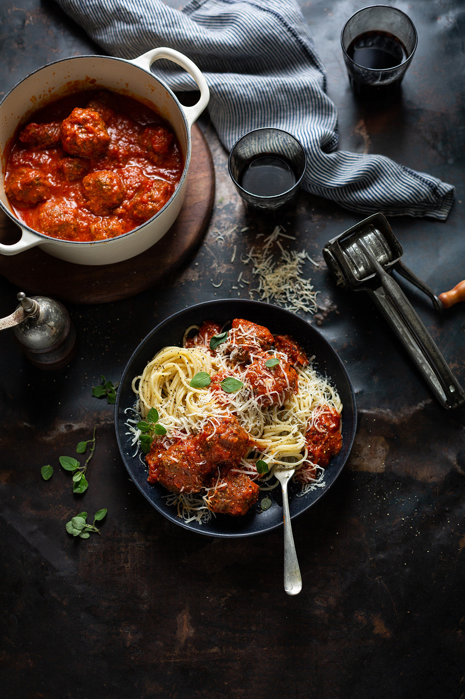

Home
Spaghetti and Meatballs

Ingredients:
Tomato sauce:
- 2 400 gram tins of chopped tomatoes preferably of Italian origin
- 1 onion peeled and cut in half
- 50 grams salted butter
- ½ tsp dried chilli flakes optional
- Salt & pepper
Meatballs:
- 500 grams beef mince preferably free-range
- 2 tsp dried oregano
- 2 Tbsp tomato paste
- 1 free-range egg
- ¼ cup grated Parmesan or Pecorino
- ½ cup breadcrumbs I used panko
- ¼ cup seedless raisins
- Salt & pepper
- 10 grams parsley
- 1 clove garlic crushed
- 300 grams spaghetti cooked al dente
- Additional Parmesan to serve
Instructions:
- Make the sauce first by putting all the ingredients into a medium-sized pot and bringing it to a simmer. Let it bubble away for 45 minutes to an hour.
- When you are ready to make your meatballs, preheat the oven to 175C / 347F and spray a baking sheet with cooking spray or line it with a silicone sheet/baking paper. Make your meatballs by adding the mince, dried oregano, tomato paste, egg, cheese, and breadcrumbs to a large bowl.
- In a small food processor, blend the raisins, parsley, and garlic until it’s a paste. Add this to the bowl with the mince and using your hands, mix until everything is well combined. Season well with salt and pepper. It needs at least 1 tsp salt and ½ tsp pepper.
- Roll out your meatballs and place them on the baking sheet allowing space in between each. Roast for 20 minutes and until firm and golden, or fry in olive oil until golden brown (but not cooked through). If you have made the meatballs slightly in advance, you can just heat them up in the sauce. If you have fried them, allow them to finish cooking in the sauce.
- When the tomato sauce is ready, remove the onion from the pot scraping off any sauce. Peel off all the softer inner petals of the onion (about half the onion) and using a stick blender, blend this into the sauce. You can of course simply remove it and it is delicious as is.
- Remove the meatballs from the oven and add them along with all the pan liquid to the sauce.
- Once things are well on the way to finishing, heat a large pot of salty water to boiling and cook your pasta to al dente. Drain and combine with the sauce and meatballs. Serve with grated parmesan.